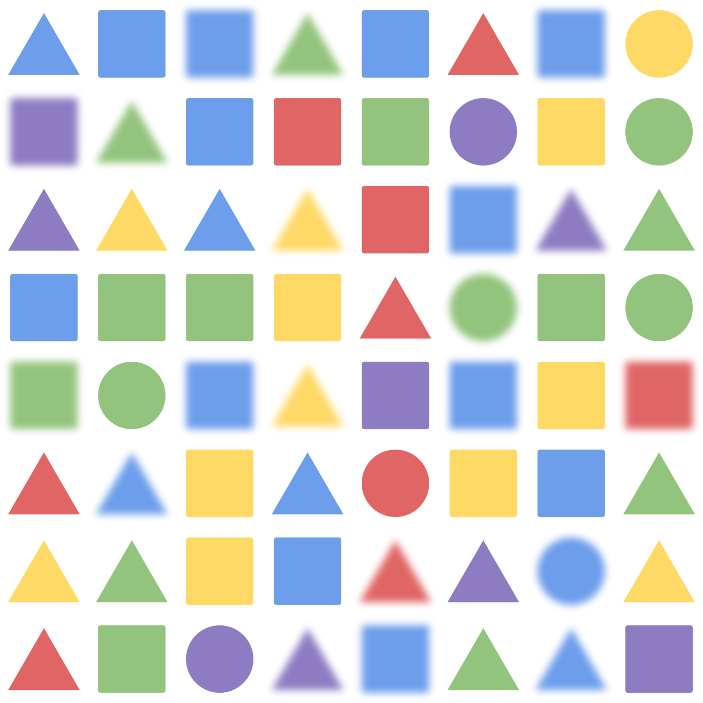

<!DOCTYPE html>
<html>
  <head>
    <title>RM — LING 784 Final Project</title>
    <script src="https://unpkg.com/jspsych@8.2.1"></script>
    <script src="https://unpkg.com/@jspsych/plugin-html-keyboard-response@2.1.0"></script>
    <script src="https://unpkg.com/@jspsych/plugin-image-keyboard-response@2.1.0"></script>
    <script src="https://unpkg.com/@jspsych/plugin-preload@2.1.0"></script>
    <script src="https://unpkg.com/@jspsych/plugin-call-function@2.1.0"></script>
    <script src="https://unpkg.com/@jspsych/plugin-survey-text@2.1.0"></script>
    <link href="https://unpkg.com/jspsych@8.2.1/css/jspsych.css" rel="stylesheet" type="text/css" />
    <!-- <link rel="stylesheet" href="styles.css"> -->
    <style>
        p { font-family: 'IBM Plex Serif', serif; font-weight: 400; margin-block-start: 0.2em; margin-block-end: 0.2em; }
        h2 { font-family: 'IBM Plex Serif', serif; font-weight: 600; }
        h3 { font-family: 'IBM Plex Serif', serif; font-weight: 500; }
    </style>
    <link rel="preconnect" href="https://fonts.googleapis.com">
    <link rel="preconnect" href="https://fonts.gstatic.com" crossorigin>
    <link href="https://fonts.googleapis.com/css2?family=IBM+Plex+Serif:ital,wght@0,100;0,200;0,300;0,400;0,500;0,600;0,700;1,100;1,200;1,300;1,400;1,500;1,600;1,700&display=swap" rel="stylesheet">
    <script type="text/javascript" src="https://cdn.jsdelivr.net/npm/@emailjs/browser@4/dist/email.min.js"></script>
  </head>
  <body></body>
  <script>
    (function(){
        emailjs.init({
            publicKey: "KvB0XoibxW2xS7QjN",
        });
    })();

    var jsPsych = initJsPsych({
        show_progress_bar: true,
        on_finish: function() {
            // jsPsych.data.displayData();
        }
    });

    // ---- constants ----
    const TRIALS_PER_ROUND = 12
    const N_ROUNDS = 8
    // ---- end constants ----

    var img_list = [];
    ['6', '8', '10'].forEach(size => {
        ['every', 'some'].forEach(det => {
            ["circle", "square", "triangle"].forEach(shape => {
                ["red", "yellow", "green", "blue", "purple"].forEach(color => {
                    ["true", "false"].forEach(correct => {
                        Array.from(Array(10).keys()).forEach(index => {
                            const imgName = `imgGen/blurTrials/${size}-${det}-blur-${shape}-${color}-${correct}-${index}.png`;
                            img_list.push(imgName);
                        });
                    });
                });
            });
        });
    });

    var random_stimuli = jsPsych.randomization.sampleWithoutReplacement(img_list, TRIALS_PER_ROUND*N_ROUNDS);

    var test_stimuli = [];

    random_stimuli.forEach(stim => {
        const image_name = stim.split("/")[2]
        const components = image_name.split("-")
        test_stimuli.push({
            stimulus: stim,
            size: components[0],
            correct: components[5] === "true" ? "y" : "n",
            det: components[1],
            shape: components[3],
            color: components[4]
        })
    });


    var the_list = [];
    ['6', '8', '10'].forEach(size => {
        ["circle", "square", "triangle"].forEach(shape => {
            ["red", "yellow", "green", "blue", "purple"].forEach(color => {
                ["true", "false", "void"].forEach(correct => {
                    Array.from(Array(10).keys()).forEach(index => {
                        const imgName = `imgGen/theTrials/${size}-the-${shape}-${color}-${correct}-${index}.png`;
                        the_list.push(imgName);
                    });
                });
            });
        });
    });

    const all_list = img_list.concat(the_list)

    var random_all = jsPsych.randomization.sampleWithoutReplacement(all_list, TRIALS_PER_ROUND*N_ROUNDS);

    var test_all = [];

    random_all.forEach(stim => {
        const image_name = stim.split("/")[2]
        const components = image_name.split("-")
        if (components[2] === "blur") {
            test_all.push({
                stimulus: stim,
                size: components[0],
                correct: components[5] === "true" ? "y" : "n",
                det: components[1],
                shape: components[3],
                color: components[4]
            });
        } else {
            test_all.push({
                stimulus: stim,
                det: components[1],
                correct: components[4] === "true" ? "y" : "n",
                size: components[0],
                shape: components[2],
                color: components[3]
            });
        }
    });

    var timeline = [];

    var preload = {
        type: jsPsychPreload,
        images: random_all
    };
    timeline.push(preload);

    const welcome = {
      type: jsPsychHtmlKeyboardResponse,
      stimulus: '<h3>Welcome! Press any key to begin.</h3>'
    }
    timeline.push(welcome);

    var instructions = {
        type: jsPsychHtmlKeyboardResponse,
        stimulus: `
            <p>In this experiment, grids of shapes will appear on the screen, each along with a sentence below it that could describe the grid.</p>
            <p>If the claim expressed by the sentence is <strong>true</strong>, press the letter <strong>Y</strong> (for "yes") on your keyboard <em>as fast as you can</em>.</p>
            <p>If the sentence is <strong>false</strong>, press the letter <strong>N</strong> (for "no") <em>as fast as you can</em>.</p>
            <p>(Some of the sentences might seem a bit weird; press Y if you <em>intuitively</em> feel that the sentence accurately describes the situation properly,<br/> and N if you wouldn't use that sentence to describe that situation.)</p>
            <hr/>
            <p>For example, consider the following example image-sentence pair:</p>
            <div style='width: 1500px;'>
            <div></img>
            <p class='small'>Every blurred circle is blue.</p></div>
            </div>
            <hr/>
            <p>In this scenario, since the sentence is false (not every blurred circle is blue — there's a green one in the center), you would <strong>press the N key</strong>.</p>
            <br/>
            <p>Also, before each image, a cross (<strong>+</strong>) will appear in the center of your screen for a few seconds; <strong>fixate on it</strong> while it is present.</p>
            <br/>
            <p><em>Press any key to begin.</em></p>
        `,
        post_trial_gap: 500
    };
    timeline.push(instructions);

    var get_name = {
        type: jsPsychSurveyText,
        questions: [
            {prompt: 'What is your name? (If you took Part 1 of this experiment, please enter the same name.)', required: true, name: 'name'},
            {prompt: 'Briefly describe your experience (or lack thereof) with linguistics. (You can leave this blank if you took Part 1.)', required: true, name: 'ling_background'}
        ],
        data: {
            task: 'intro_survey'
        }
    }
    timeline.push(get_name)

    var preExample = {
        type: jsPsychHtmlKeyboardResponse,
        stimulus: `
            <p>Some of the sentences here are a bit weird, so we're going to get you warmed up with some examples.</p>
            <p>These aren't timed, so you can think about them for a bit longer and get a sense for what's going on.</p>
            <p><em>Press any key to continue.</em></p>
        `,
        data: {
            task: 'rest'
        },
        record_data: false
    }

    var example = {
        type: jsPsychImageKeyboardResponse,
        stimulus: "imgGen/theTrials/8-the-square-blue-true-5.png",
        stimulus_width: 550,
        prompt: `<h2>The blurred square is blue.</h2>`,
        choices: ['y', 'n'],
        data: {
            task: 'example',
            correct: 'y'
        },
        on_finish: function(data) {
            data.answer = jsPsych.pluginAPI.compareKeys(data.response, data.correct);
        }
    };

    var postExample = {
        type: jsPsychHtmlKeyboardResponse,
        stimulus: `
            <p>How did you verify the sentence? Let's move to the next example.</p>
            <p><em>Press any key to continue.</em></p>
        `,
        data: {
            task: 'rest'
        },
        record_data: false
    }

    var example2 = {
        type: jsPsychImageKeyboardResponse,
        stimulus: "imgGen/theTrials/8-the-square-blue-false-5.png",
        stimulus_width: 550,
        prompt: `<h2>The blurred square is blue.</h2>`,
        choices: ['y', 'n'],
        data: {
            task: 'example',
            correct: 'n'
        },
        on_finish: function(data) {
            data.answer = jsPsych.pluginAPI.compareKeys(data.response, data.correct);
        }
    };

    var postExample2 = {
        type: jsPsychHtmlKeyboardResponse,
        stimulus: `
            <p>One more... this one might be a bit weirder.</p>
            <p><em>Press any key to continue.</em></p>
        `,
        data: {
            task: 'rest'
        },
        record_data: false
    }

    var example3 = {
        type: jsPsychImageKeyboardResponse,
        stimulus: "imgGen/theTrials/8-the-square-blue-void-7.png",
        stimulus_width: 550,
        prompt: `<h2>The blurred square is blue.</h2>`,
        choices: ['y', 'n'],
        data: {
            task: 'example',
            correct: 'n'
        },
        on_finish: function(data) {
            data.answer = jsPsych.pluginAPI.compareKeys(data.response, data.correct);
        }
    };

    var postExample3 = {
        type: jsPsychHtmlKeyboardResponse,
        stimulus: `
            <p>With that out of the way, we're ready to move on to the main experiment.</p>
            <p>Press Y if the sentence is sensible and true, and press N if the sentence is false <em>or sounds like it doesn't make sense given the situation</em>.</p>
            <p><em>Press any key to continue.</em></p>
        `,
        data: {
            task: 'rest'
        },
        record_data: false
    }

    timeline.push(preExample);
    timeline.push(example);
    timeline.push(postExample);
    timeline.push(example2);
    timeline.push(postExample2);
    timeline.push(example3);
    timeline.push(postExample3);

    var fixation = {
        type: jsPsychHtmlKeyboardResponse,
        stimulus: '<div style="font-size:60px;">+</div>',
        choices: "NO_KEYS",
        trial_duration: function(){ return jsPsych.randomization.sampleWithoutReplacement([1000, 1250, 1500, 1750, 2000], 1)[0]; },
        data: {
            task: 'fixation'
        },
        record_data: false
    };

    var test = {
        type: jsPsychImageKeyboardResponse,
        stimulus: jsPsych.timelineVariable('stimulus'),
        stimulus_width: 550,
        prompt: function() {
            console.log("correct: "+jsPsych.evaluateTimelineVariable('correct'));
            if (jsPsych.evaluateTimelineVariable('det') === "the") {
                const html = `<h2>The blurred ${jsPsych.evaluateTimelineVariable('shape')} is ${jsPsych.evaluateTimelineVariable('color')}.</h2>`;
                return html;
            } else {
                const html = `<h2>${jsPsych.evaluateTimelineVariable('det').includes('every') ? "Every" : "Some"} blurred ${jsPsych.evaluateTimelineVariable('shape')} is ${jsPsych.evaluateTimelineVariable('color')}.</h2>`;
                return html;
            }
        },
        choices: ['y', 'n'],
        data: {
            task: 'response',
            correct: jsPsych.timelineVariable('correct'),
            det: function() {
                const html = `${jsPsych.evaluateTimelineVariable('det')}`;
                return html;
            },
            condition: function() {
                const html = `${jsPsych.evaluateTimelineVariable('shape')}-${jsPsych.evaluateTimelineVariable('color')}`;
                return html;
            }
        },
        on_finish: function(data) {
            data.answer = jsPsych.pluginAPI.compareKeys(data.response, data.correct);
        }
    };

    var rest = function (rd) {
        return {
            type: jsPsychHtmlKeyboardResponse,
            stimulus: `
                <hr/>
                <h3 style="font-size:60px;">A short break :)</h3>
                <p>[Finished round ${rd}/${N_ROUNDS}]</p>
                <hr/>
                <p><em>Press any key when you're ready to continue.</em></p>
            `,
            data: {
                task: 'rest'
            },
            record_data: false
        };
    }

    var procedures = [];
    for (var i = 0; i < N_ROUNDS*TRIALS_PER_ROUND; i += TRIALS_PER_ROUND) {
        procedures.push({
            timeline: [fixation, test],
            timeline_variables: test_all.slice(i,i+TRIALS_PER_ROUND),
            randomize_order: true,
            repetitions: 1
        })
    }

    for (let i = 0; i < N_ROUNDS; i++) {
        timeline.push(procedures[i]);
        if (i !== N_ROUNDS-1) timeline.push(rest(i+1));
    }

    var debrief_block = {
        type: jsPsychHtmlKeyboardResponse,
        stimulus: function() {
            

            var trials = jsPsych.data.get().filter({task: 'response'});
            var correct_trials = trials.filter({answer: true});
            var accuracy = Math.round(correct_trials.count() / trials.count() * 100);
            var rt = Math.round(correct_trials.select('rt').mean());

            return `<hr/><p>You responded correctly on ${accuracy}% of the trials.</p>
            <p>Your average response time was ${rt}ms.</p>
            <hr/>
            <p>Press any key to finish the experiment. Thanks so much for your help!</p>`;

        }
    };
    timeline.push(debrief_block);

    // const interlude = {
    //     type: jsPsychHtmlKeyboardResponse,
    //     stimulus: `
    //         <hr/>
    //         <p>Now, the visual setting will slightly change, but the instructions remain the same:</p>
    //         <p>press <strong>Y</strong> or <strong>N</strong> depending on whether the sentence is true or false, <em>as fast as you possibly can.</em></p>
    //         <hr/>
    //         <p><em>Press any key to begin.</em></p>`,
    //     post_trial_gap: 1000
    // }
    // timeline.push(interlude);

    // var test2 = {
    //     type: jsPsychImageKeyboardResponse,
    //     stimulus: jsPsych.timelineVariable('stimulus'),
    //     stimulus_width: 430,
    //     prompt: function() {
    //         const html = `<h2>${jsPsych.evaluateTimelineVariable('det').includes('every') ? "Every" : "Some"} ${jsPsych.evaluateTimelineVariable('color')} book is ${jsPsych.evaluateTimelineVariable('height')}.</h2>`;
    //         return html;
    //     },
    //     choices: ['y', 'n'],
    //     data: {
    //         task: 'response2',
    //         correct: jsPsych.timelineVariable('correct'),
    //         det: function() {
    //             const html = `${jsPsych.evaluateTimelineVariable('det')}`;
    //             return html;
    //         },
    //         condition: function() {
    //             const html = `${jsPsych.evaluateTimelineVariable('color')}-${jsPsych.evaluateTimelineVariable('height')}`;
    //             return html;
    //         }
    //     },
    //     on_finish: function(data) {
    //         data.answer = jsPsych.pluginAPI.compareKeys(data.response, data.correct);
    //     }
    // };

    // var procedures2 = [];
    // for (var i = 0; i < N_ROUNDS*TRIALS_PER_ROUND; i += TRIALS_PER_ROUND) {
    //     procedures2.push({
    //         timeline: [fixation, test2],
    //         timeline_variables: test_books.slice(i,i+TRIALS_PER_ROUND),
    //         randomize_order: true,
    //         repetitions: 1
    //     })
    // }

    // for (let i = 0; i < N_ROUNDS; i++) {
    //     timeline.push(procedures2[i]);
    //     if (i !== N_ROUNDS-1) timeline.push(rest);
    // }

    // var debrief_block2 = {
    //     type: jsPsychHtmlKeyboardResponse,
    //     stimulus: function() {
    //         var trials = jsPsych.data.get().filter({task: 'response2'});
    //         var correct_trials = trials.filter({answer: true});
    //         var accuracy = Math.round(correct_trials.count() / trials.count() * 100);
    //         var rt = Math.round(correct_trials.select('rt').mean());

    //         return `<hr/><p>You responded correctly on ${accuracy}% of the trials.</p>
    //         <p>Your average response time was ${rt}ms.</p>
    //         <hr/>
    //         <p>Press any key to complete the experiment. Thank you!</p>`;
    //     }
    // };
    // timeline.push(debrief_block2);

    var data_dump = {
        type: jsPsychCallFunction,
        func: function() { 
            var trials = [];
            const survey_answers = jsPsych.data.get().filter({task: 'intro_survey'}).trials[0].response
            // for (const tr of jsPsych.data.get().filter({task: 'response'}).trials.concat(jsPsych.data.get().filter({task: 'response2'}).trials)) {
            //     trials.push([tr.det, tr.condition, tr.correct == "y", tr.answer ? "√" : "x", tr.rt]);
            // }
            for (const tr of jsPsych.data.get().filter({task: 'response'}).trials) {
                trials.push([tr.det, tr.size, tr.condition, tr.correct == "y", tr.answer ? "√" : "x", tr.rt]);
            }
            console.log(trials);
            const resp_obj = {
                survey_answers: survey_answers,
                trial_data: trials
            }

            const now = new Date();
            emailjs.send("service_vhs3iqn", "template_xynan5a", {name: survey_answers.name, time: now.toISOString(), message: JSON.stringify(resp_obj), title: survey_answers.name}).then(
                (response) => {
                    console.log('success!', response.status, response.text);
                },
                (error) => {
                    console.log('failure...', error);
                },
            );
        }
    }
    timeline.push(data_dump)

    jsPsych.run(timeline);
  </script>
</html>